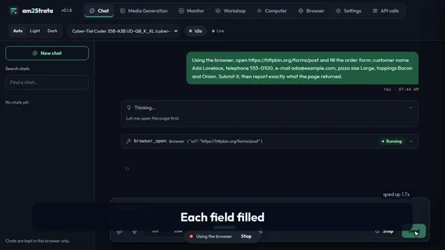
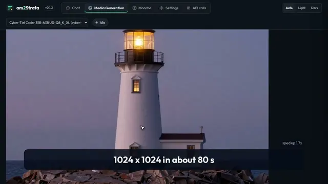
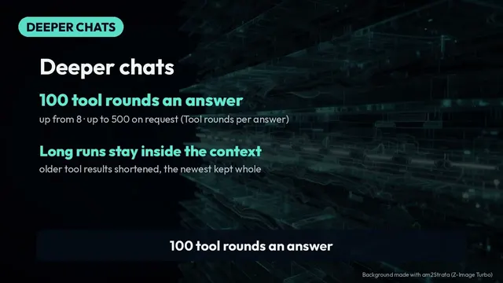
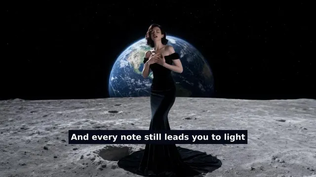
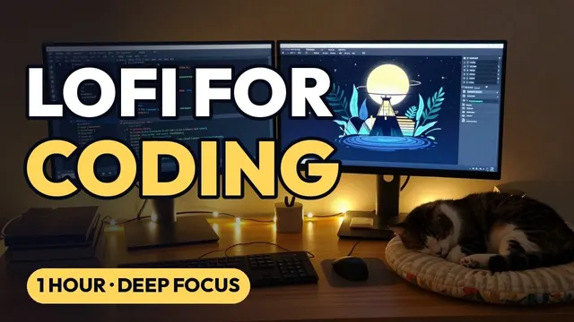
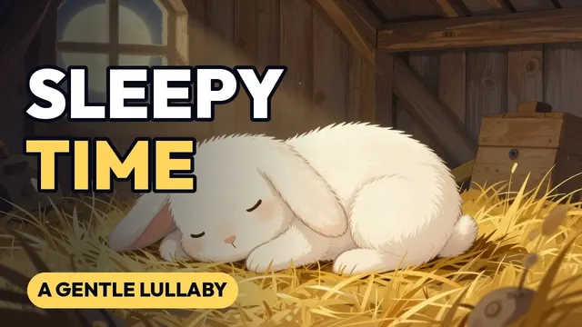
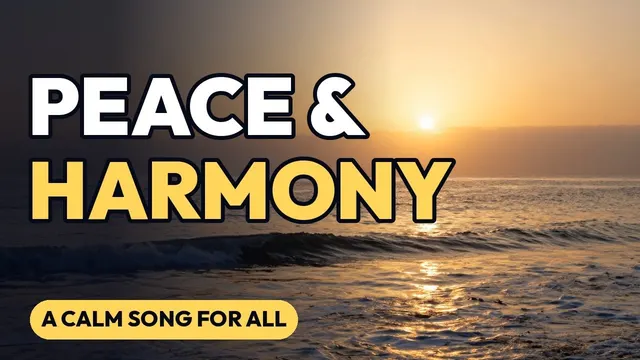
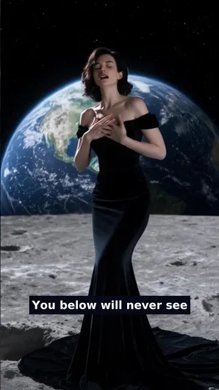

What it does
One server on your machine, one address for every app.
Your models, your data and your keys stay with you.
Bigger than RAM Rust engine
The weights every token uses stay in GPU memory or RAM, the hot experts are pinned in RAM, and cold experts are read from the SSD only when they are picked. A 17.5 GB model runs on a 16 GB Mac at 2.5x llama.cpp's speed.
Browser use any OS
The model drives a real browser: it scrapes tables into datasets, fills forms and asks you before it sends anything. From the chat, the command line, or any coding agent through MCP.
Cluster mutual TLS
Pair a Mac or another PC by a 6-digit code. Workers answer requests and serve small models as extra "brains" the main model can ask, over mutual TLS 1.3 with pinned certificates.
Compatible APIs any OS
OpenAI, Anthropic, Responses and Gemini-compatible endpoints, streaming and tools included, so existing apps connect with just a base URL and a key.
Coding agents any OS
Claude Code, Codex, opencode, Qwen Code, Aider, Goose, the Gemini CLI and more, connected to your own models in one command.
Web app any OS
Chat with a live canvas for HTML, diagrams and Python in a sandbox; a Monitor for speed, GPUs and the queue; settings for everything else.
Workshop any OS
Convert a Hugging Face model to GGUF, quantize it, merge a LoRA adapter, and install the result. Turn your documents into training data and fine-tune, sized to your machine.
Sandbox VM Linux · KVM
Computer use in its own small Debian virtual machine: the agent installs and runs what it needs inside, and your PC is untouched. It pauses when idle and resumes in about a second.
Computer tab Linux
Watch the agent's desktop live, take control with your own mouse and keyboard, and copy and paste across. Rules you choose decide what it may do.
Secure by default any OS
HTTPS and secure WebSockets with a self-signed, your own or a Tailscale certificate. API keys with limits and expiry, and usage per key and per model.
Media build from source
Songs that sing their lyrics in 50+ languages, voices, images, video and speech to text, all on your own GPU. Video frames are read without ffmpeg.
One live connection any OS
The web app talks to the server over one WebSocket: answers stream over it, and status, the queue and jobs are pushed the moment they change.
The engine
Bigger than your RAM, and still fast.
A mixture-of-experts model uses only a few of its experts for each token. am2Strata's Rust engine keeps those close and leaves the rest on the SSD, so a model larger than your memory runs without swapping.
Hand-written SIMD kernels (AVX2 on x86, NEON on Apple silicon) give exactly the same results as the plain ones; tokens are checked against llama.cpp.
GLM-4.7-Flash on a 16 GB Mac mini M4
512-token prompt, 64 generated tokens, tokens per second. am2Strata at 8-10 threads, llama.cpp measured at 4.
llama.cpp's Metal path ran out of GPU memory on this model. Every number is in docs/HYBRID-SPEED.md.
Cluster
Your machines, working as one.
A PC as the master, a Mac mini as a worker: paired once, then every request between them is encrypted both ways. Apps keep talking to one address.
What each machine keeps (the diagram as text)
Master (for example the Linux PC with the big GPUs): its main API key, its certificate (node-tls.json, which is its pin), and cluster-workers.json with each worker's address, pin and the key it was given. Clients only ever talk to the master; their keys are never sent on to a worker.
Worker (for example a Mac mini): its own main API key, which never leaves it; its node key and certificate; and cluster-masters.json with each master's pin and only the hash of the key it gave that master. Ports: 8000 for the API, 8443 for the cluster (TLS), 8001 for HTTPS.
Pairing: the worker shows a 6-digit code, new every 10 minutes; five wrong codes lock pairing for 10 minutes. To remove a worker: Settings › Cluster › Remove; its key stops working at once.
See it
Real screens, one PC.
Screenshots of the web app and infographics of how it works. Select any of them to view it full screen, zoom in and move around.
Infographics
The web app
The Workshop and Computer tabs are newer than these screenshots.
Videos
Recorded live, made with am2Strata.
Demos recorded on one PC, and music, pictures and voices made with am2Strata itself. They open on YouTube.
Demos and what's new

New2:48 Browser Use: Scrape Tables, Fill Forms, Ask Before SendingA Wikipedia table saved as a dataset of 85 cities, a form filled field by field with your OK before it sends, and the same from the command line. (opens in a new tab) 5:16
am2Strata v0.1.8: Model Workshop, Sandbox VM, HTTPS and API KeysThe Workshop, the sandbox VM and Computer tab, HTTPS and secure WebSockets, API keys, one live channel. (opens in a new tab)
5:16
am2Strata v0.1.8: Model Workshop, Sandbox VM, HTTPS and API KeysThe Workshop, the sandbox VM and Computer tab, HTTPS and secure WebSockets, API keys, one live channel. (opens in a new tab)

9:59 Run AI on Your Own PC: the 10-minute tourInstall, chat, canvas, Python, memory, web search, images, voice, coding agents, three APIs and the Monitor. (opens in a new tab) 8:50
This Home PC Speaks 11 Languages, Writes Code and PaintsVoices in eleven languages, code and pictures, all on one PC with no cloud. (opens in a new tab)
8:50
This Home PC Speaks 11 Languages, Writes Code and PaintsVoices in eleven languages, code and pictures, all on one PC with no cloud. (opens in a new tab)

4:06 Songs That Sing Your Lyrics (v0.1.4)Songs that follow their lyrics, native voices, MCP tool servers from the app, and the server's tools for every app. (opens in a new tab)Made with am2Strata

2:31 The Moon Woman Singing to MavenA cinematic ballad sung across the empty space to Earth. (opens in a new tab)
58:45 Lofi for Coding: 1 Hour of Deep FocusTwenty original instrumental tracks for programming and study. (opens in a new tab) 2:51
Moonlight on the SeaA slow, calm song to let the day go. (opens in a new tab)
2:51
Moonlight on the SeaA slow, calm song to let the day go. (opens in a new tab)

2:31 Little Moon, GoodnightA gentle lullaby for sleep. (opens in a new tab)
3:22 Peace and HarmonyA calm song about kindness and living as one. (opens in a new tab)
0:58 The Moon Woman Singing to Maven (Short)The ballad's chorus, vertical. (opens in a new tab)More on the channel: am2Strata on YouTube (opens in a new tab).
Install
One line, any of six platforms.
The installer picks the right download for your system and processor, checks its SHA-256, needs no admin rights, and keeps your models and settings when you update.
1 · Get a model
Pull a small one to start:am2strata pull mistralai/Ministral-3-3B-Instruct-2512-GGUF Q4_K_M
2 · Start it
Run am2strata and open http://127.0.0.1:8000 in your browser.
3 · Check your PC
am2strata-run doctor lists each optional feature and exactly what this machine still needs for it.
Platforms
Where it runs
Six downloads. The server, the web app, the APIs and the Workshop work on all of them.
| Linux x64 | Linux Arm | macOS Apple silicon | macOS Intel | Windows x64 | Windows Arm | |
|---|---|---|---|---|---|---|
| Server, web app, APIs, Workshop | yes | yes | yes | yes | yes | yes |
| Rust engine | CPU (AVX2) or GPU | CPU | CPU (NEON) or GPU | CPU | CPU (AVX2) or GPU | CPU |
| Browser use | yes | yes | yes | yes | yes | yes |
| Cluster (master or worker) | yes | yes | yes | yes | yes | yes |
| Computer tab | yes | yes | – | – | – | – |
| Sandbox VM | yes (KVM) | – | – | – | – | – |
| Start at sign-in | systemd | systemd | launchd | launchd | Startup | Startup |
Principles
Built to stay yours
Glossary
Words and abbreviations on this page
- API
- Application programming interface: the address and rules other programs use to talk to am2Strata.
- AVX2, NEON
- Instruction sets that let a processor do many small calculations at once: AVX2 on Intel and AMD, NEON on Arm chips such as Apple silicon.
- CLI
- Command-line interface: commands typed in a terminal.
- Cluster
- Several of your own computers working together, one acting as the master and the others as workers.
- Expert
- One of the many smaller parts of a mixture-of-experts model; each word uses only a few of them.
- GGUF
- A file format for AI models that run on your own computer.
- GPU
- Graphics processing unit: the graphics card, which also runs AI models fast.
- HTTPS, TLS
- Encrypted connections. Mutual TLS means both computers prove who they are to each other.
- KVM
- Kernel-based virtual machine: Linux's built-in way to run a separate computer inside your computer.
- LoRA
- A small add-on that changes how a model behaves, made by fine-tuning.
- MCP
- Model Context Protocol: a standard way for AI apps to use tools.
- MIT
- A short open-source licence: free to use, change and share.
- Mixture of experts (MoE)
- A model made of many experts; a router picks a few for each word.
- RAM
- Random-access memory: the computer's fast working memory.
- SIMD
- Single instruction, multiple data: doing the same calculation on many numbers at once.
- SSD
- Solid-state drive: the computer's storage disk.
- Swap
- Disk space the system uses as extra memory when RAM is full; much slower than RAM.
- Tokens per second
- How fast a model reads or writes text; a token is about three quarters of a word.
- VM
- Virtual machine: a separate computer running inside your computer.